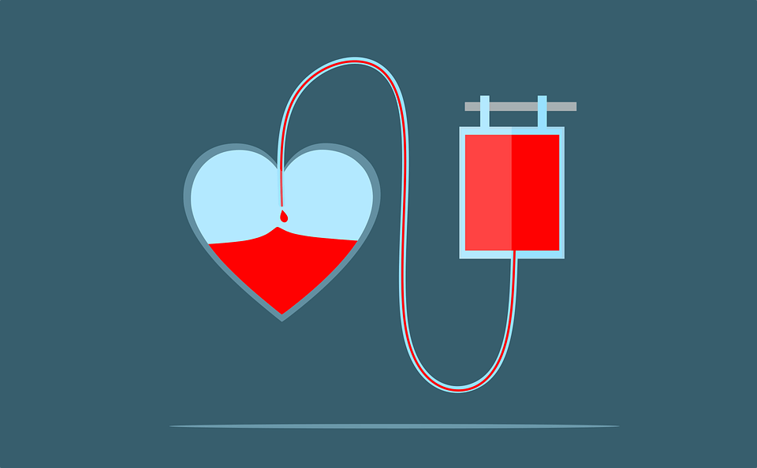

Porque Doar Sangue?
Menos risco de câncer
Durante a doação de sangue, ocorre uma significativa baixa na reserva de ferro no organismo, o que possibilita uma redução dos riscos de desenvolver câncer de fígado, garganta e pulmão.
Check-up totalmente gratuito
Antes mesmo da "picada", os hemocentros efetuam uma série de exames para saber se o indivíduo está apto ou não para fazer uma contribuição. Por meio de testes específicos, é possível identificar a presença de doenças, como sífilis, hepatites e HIV, o que garante mais segurança para quem vai receber a doação.
No decorrer de todo esse processo, a saúde do doador também é verificada, contribuindo para a prevenção e tratamento de doenças descobertas apenas com um exame de sangue.
Um merecido dia de folga
Como forma de estimular a realização de mais doações voluntárias, o governo assegura pela CLT o direito do doador se ausentar do trabalho pelo período de um dia, concedido por meio de um atestado de comparecimento. Em alguns Estados da União, como Espírito Santo e Paraná, voluntários são contemplados com meia entrada nas salas de cinema. É importante verificar quais cinemas retomaram suas atividades e se os mesmos estão seguindo os protocolos de segurança durante o período de pandemia.
Requisitos para ser um doador de sangue
É preciso seguir normas estabelecidas pelo governo, como ter entre 16 e 69 anos de idade, apresentar peso acima de 50 kg para os homens e 56 kg para as mulheres, além disso, pessoas que possuem tatuagens e maquiagens definitivas devem aguardar um prazo de até 12 meses para doar. Se você ou alguém da sua família atende tais condições, não deixe de fazer uma doação. Aproveite para compartilhar com o máximo de pessoas esse conteúdo, afinal, em tempos de pandemia toda ajuda é bem-vinda.
Saiba Mais Sobre Beneficios e Requisitos